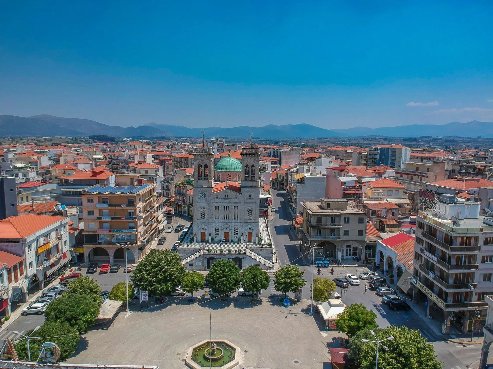

Tripoli

3 Fun Facts About Tripoli
- High above sea level: Tripoli is the capital of Arcadia and sits on a plateau approximately 655 meters above sea level.
- A key place in Greek independence: The capture of Tripolitsa in 1821 was a major turning point in the Greek War of Independence.
- An impressive main square: Areos Square, in the heart of Tripoli, is one of the largest and most striking public squares in Greece.